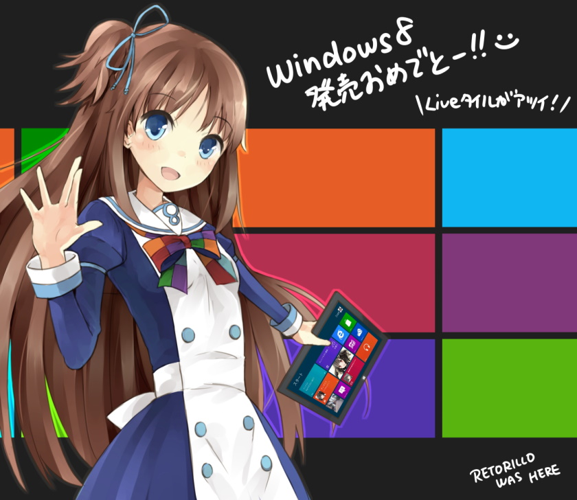

Sideloading Windows 8 Applications
 Home
Original guide was made by YavBav09.
Made for the Windows 8 Appx Archive Project: https://discord.gg/xYNvsYYwQ7
Getting a developer license via TSForge (All SKUs (Except core))
TSForge is a tool included in massgrave's Windows activation tool. Which can be found here or you can run this powershell code to automatically download it.
After activating APPXLOB you can check the state of the activation by running
It should look like something like this:
Now, open Group policy. Go to: Administrative Templates\Windows Components\App Package Deployment
Enable the following settings:
- Allow development of Windows Store apps without installing a developer license
- Allow all trusted apps to install
Making a backup of your app via WSAppBak
The app is now installed, but you may notice that if you launch it,
it won't work due to a missing license. What you need to do is to go to C:\Program Files\WindowsApps.
This directory is hidden by default, so you might need to type the path
out or show hidden files. You won't be granted access at first, so you
should change ownership of the folder to your account.
After that, find the folder where the app resides and copy it's path.
Example: C:\Program Files\WindowsApps\Microsoft.RemoteDesktop_6.2.9200.20523_neutral__8wekyb3d8bbwe
Start WSAppbak, paste the folder path into the input folder, paste a
different folder path for the output folder. After it has finished, you
have the newly created .appx and certificate.cer.
Install the certificate to the local machine > trusted root
certificates. Delete the previously installed app, after that install
the newly generated appx.
Installing apps
Open PowerShell and use this command:
Getting a developer license (All SKUs)
This method no longer works due to the store shutdown.
Open PowerShell. Get a Windows developer registration using this command:
pwsh
Show-WindowsDeveloperLicenseRegistration
If it doesn't work the first time, try a few more times. This
license has a time limit and needs to be renewed to keep using the
sideloaded apps, you will need to run this command again to renew it.